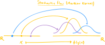

Large language models (LLMs) like ChatGPT have brought probabilistic models into mainstream conversation. Unlike deterministic models that always produce the same output for a given input, these models generate a probability distribution over many possible outputs. Information theory provides the mathematical framework for understanding these distributions, and how sensitive they are to the inputs of the model.
To understand this more concretely, consider what happens when you prompt an LLM. You might ask “What’s the capital of France?” and reliably get “Paris” as the answer. The model is highly confident: the output probability distribution is concentrated over the one-word output “Paris”. But if you ask “Write me a poem about autumn,” you’ll get a different response each time. Here, the probability distribution is spread across countless possible poems, each with some small probability of being generated. In the first case, the model is certain, reflected in the strongly peaked output distribution, while in the latter case it is uncertain, reflected in the highly dispersed output distribution. The input to the model (i.e., the prompt) thus has a strong effect on the certainty in the output distribution.
The gap between certainty and uncertainty lies at the heart of information theory. When Claude Shannon founded the field in 1948, he was grappling with a fundamental question in telecommunications: how much data can you reliably transmit through a noisy communication channel? Telephone wires introduce random distortions like static and interference, scrambling the signal in unpredictable ways. Shannon realized he could model this mathematically using probability theory, and what began as a framework for analyzing communication over literal telephone wires evolved into an abstract mathematical theory with remarkably broad applications. Indeed, Shannon has been credited with laying the foundations for our modern information-based society.
This post will survey the most basic quantities of information theory: surprisal, entropy, and mutual information. Surprisal is a quantity attached to a random outcome that is inversely linked to its probability: a likely outcome is not surprising, while an unlikely one is highly surprising. When we average surprisal over all possible random outcomes, we obtain the entropy, which quantifies the overall uncertainty in a probability distribution. Finally, mutual information applies to two random variables \(X\) and \(Y\) with a joint distribution. It measures how much observing \(X\) reduces the uncertainty (entropy) in \(Y\) on average. This last quantity connects directly to our discussion of LLMs: it captures precisely how much the input prompt narrows down the output distribution.
While this post focuses on the foundational concepts, future posts will explore how these ideas apply to the probabilistic models used in machine learning.
Flows of information
We begin by building a mathematical gadget that models the “flow of information” between two random variables \(X\) and \(Y\) (or random vectors, or random objects, or …). Such flows are exactly what information theory calls communication channels, and they include many of the predictive probabilistic models in machine learning where information flows from input \(X\) to output \(Y\). Once these flows have been identified in this section, in the rest of the post we seek to understand how information flowing from \(X\) influences and shapes the distribution on \(Y\).
The simplest flow between \(X\) and \(Y\) is a functional one, expressed as an equation \[
g(X)=Y,
\tag{1}\]
where \(g\) is a function. With \(X\) as input and \(Y\) as output, an observed input \(X=x\) produces a unique output \(y = g(x)\). Such flows underlie deterministic models. In the case that \(X\) and \(Y\) take values on the real line \(\mathbb{R}\), we might visualize the situation like this:
Note that each value of \(x\) along the input (left) axis determines a unique value of \(y\) along the output (right) axis.
On the other hand, we might suppose that information flows from \(X\) to \(Y\) in a stochastic fashion, in which an observed input \(X=x\) does not uniquely determine an output \(y\), but rather a distribution on \(Y\). This is precisely what a conditional distribution \(P(Y= y\mid X=x)\) captures: given an observed value \(X=x\), we have a probability distribution on \(y\)’s. We can think of this as a function of the form
\[
x \mapsto P(Y= y \mid X=x),
\tag{2}\]
where the \(y\) is intended as a variable and not a fixed quantity, so that \(P(Y= y \mid X=x)\) is a probability distribution and not just a single probability. So, this function is rather special: its input is a value \(x\), while its output is an entire probability distribution. Mathematicians call such objects Markov kernels. A figure will make this more concrete: in contrast to the deterministic flows drawn above, in the case that \(X\) and \(Y\) take values on the real line \(\mathbb{R}\), we visualize a stochastic flow as follows, where each value of \(x\) is mapped to a probability distribution on \(y\)’s:

In our model of a stochastic flow, we therefore use conditional distributions, understood as functions on the conditioning variable.
In practive, very often we have a family \(P(Y=y; \theta)\) of parameterized distributions over \(y\)’s, where \(\theta\) is a parameter vector. The stochastic flow from \(X\) to \(Y\) is then implemented as a function \(x\mapsto \theta(x)\) from observations of \(X\) to parameters \(\theta\), and the conditional distribution is then defined as
Familiar models like linear regression (with known variance \(\sigma^2\)) fit this description, in which \(P(Y=y; \theta)\) is given by the normal density
for some model coefficients \(\beta_0\) and \(\beta_1\). Concisely, the stochastic flow from \(X\) to \(Y\) in a linear regression model is completely described by specifying
We will return to an information-theoretic treatment of linear regression (and other) models in a later post.
For now, let’s see all this in action with real distributions in a real-world context. Suppose that \(X\) is the number of hours that a randomly chosen student studies for an upcoming exam, restricted to discrete values \(X = 1,2,3,4,5,6\). Let’s say that most students study only 2 or 3 hours, with the full distribution on \(X\) (i.e., its mass function \(f(x)\)) given in the following plot:
We might reasonably believe that \(X\) is predictive of \(Y\), the exam score of a randomly chosen student, taking continuous values in the interval \([0,1]\), understood as percentages. The plot of the density function \(f(y)\) is given in:
Code
def fy(y):returnsum([beta.pdf(y, a=x, b=3) * fx for x, fx inzip(xs, fxs)])_, ax = plt.subplots(figsize=(6, 4))grid = np.linspace(0, 1, num=250)ax.plot(grid, fy(grid))ax.fill_between(grid, fy(grid), zorder=2, alpha=0.1)ax.xaxis.set_major_formatter(PercentFormatter(xmax=1))ax.set_title(r"marginal density $f(y)$")ax.set_xlabel("test score ($y$)")ax.set_ylabel("probability density")plt.tight_layout()plt.show()
Together, \(X\) and \(Y\) have a joint mass/density function \(f(x,y)\), visualized in the following ridgeline plot, where each of the horizontal density curves shows \(f(x,y)\) as a function of \(y\), for fixed\(x=1,2,3,4,5,6\).
Code
_, ax = plt.subplots(figsize=(6, 5))conditional_colors = [conditional_cmap(i/(n-1)) for i inrange(n)]for x, fx inzip(xs, fxs): joint_vals =1.7* beta.pdf(x=grid, a=x, b=3) * fx ax.fill_between(grid, x, x + joint_vals, color=conditional_colors[x-1], zorder=2, alpha=0.1) ax.plot(grid, x + joint_vals, color=conditional_colors[x-1], zorder=2)ax.set_ylabel(r"hours studied ($x$)")ax.set_xlabel(r"test score ($y$)")ax.xaxis.set_major_formatter(PercentFormatter(xmax=1))ax.set_title(r"joint mass/density $f(x,y)$")plt.tight_layout()plt.show()
Dividing the joint mass/density \(f(x,y)\) by the marginal mass \(f(x)\) yields the conditional densities \(f(x|y)\). These are just the same density curves in the ridgeline plot above, normalized so that they integrate to \(1\) over \([0,1]\). They are shown in:
In our information-theoretic terminology, the conditional density
\[
x\mapsto f(y|x),
\]
thought of as a function of \(x\), models the stochastic flow of information from \(X\) to \(Y\).
Inspecting the plot of the marginal density \(f(y)\) reveals a good amount of uncertainty: the distribution is peaked, but not strongly so. An exam score randomly drawn from \(Y\) will be mildly uncertain, mildly surprising. The exact amount of uncertainty in \(Y\) will be measured through its entropy, denoted \(H(Y)\), introduced in the next section. In contrast, the conditional densities \(f(y|x)\) exhibit less uncertainty compared to the marginal, especially for values of \(x\) closer to \(6\). The exact amount of uncertainty of \(Y\), given an observed value \(X=x\), will be measured through the conditional entropy, denoted \(H(Y\mid X=x)\). Averaging this conditional entropy over \(X\) yields the quantity
the average amount of uncertainty in \(Y\), given \(X\). Then, it is a general observation that
\[
H(Y) \geq H(Y\mid X)
\]
for any pair of random variables \(X\) and \(Y\), reflecting the obvious fact that no additional information will ever increase the uncertainty in \(Y\). Thus, the quantity
is a nonnegative proxy for the amount of information transmitted from \(X\) to \(Y\): if it is large, then the gap between \(H(Y)\) and \(H(Y\mid X)\) is wide, indicating that observations of \(X\) greatly reduce the uncertainty in \(Y\). We understand this as a “large amount of information” is transmitted from \(X\) to \(Y\). Conversely, if \(I(X,Y)\) is small, then observations of \(X\) do not tell us much about \(Y\); in fact, in the extreme case that \(I(X,Y)=0\), the variables \(X\) and \(Y\) are independent. The quantity \(I(X,Y)\) is exactly the mutual information between \(X\) and \(Y\), introduced in the next section.
Entropy, surprisal, and mutual information
Definition 1 Let \(X\) and \(Y\) be two random variables with density functions \(f(x)\) and \(f(y)\), respectively.
The surprisal of an observed value \(X=x\) is the quantity \[
I(x) = -\log{f(x)},
\] where the logarithm is the natural one.
The conditional surprisal of an observed value \(Y=y\), given \(X=x\), is the quantity \[
I(y|x) = -\log{f(y|x)}.
\]
Definition 2 Let \(X\) and \(Y\) be two random variables with density functions \(f(x)\) and \(f(y)\), respectively.
The entropy of \(X\) is the quantity \[
H(X) = E_{x\sim f(x)}(I(x)).
\]
The conditional entropy of \(Y\), given an observed value \(X=x\), is the quantity
info = entropy(fy) -sum([entropy(f_y_given_x) * fx[x] for x, f_y_given_x inenumerate(conditionals)])print(f"The mutual information is I(X,Y) = {info:.4f}.")
The mutual information is I(X,Y) = 0.2032.
Mutual information of jointly normal random variables
Theorem 1 Let \((X,Y) \sim \mathcal{N}_2(\boldsymbol{\mu}, \boldsymbol{\Sigma})\) be a \(2\)-dimensional normal random vector with